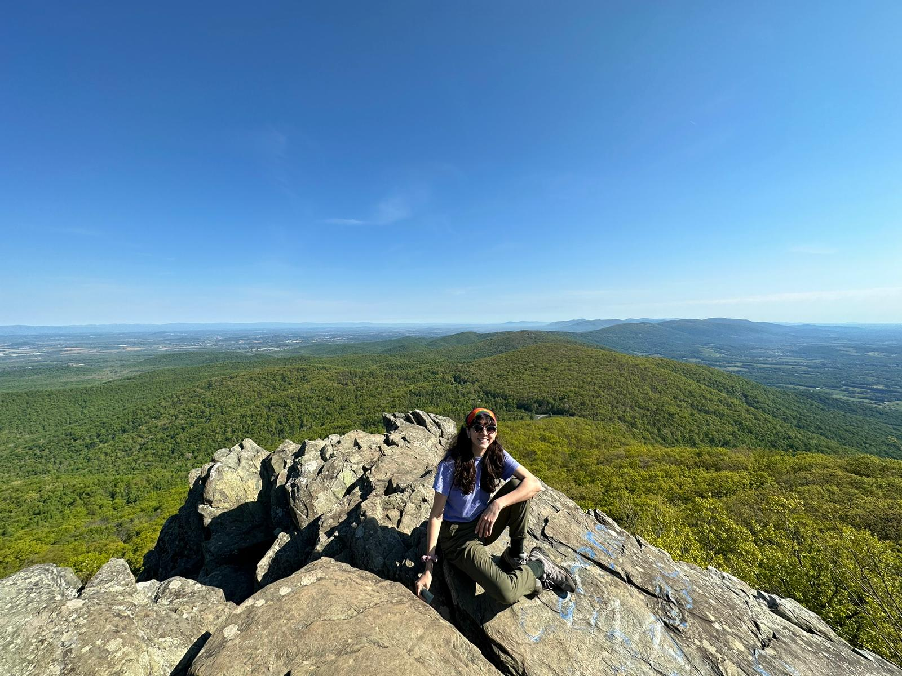

ADRIANA RAMOS

Recent college graduate (3.30/4.0) with an interest in Web Development and Programming.
Seeking to put my creativity and knowledge to use in your company.
Research Experience:
(2022) UPRM Limnology Laboratory:
- Collected and studied samples of water from local wetlands to update records of overall wetland health and diversity.
- Identified and archived macroinvertebrate samples from local wetlands to better understand their biological roles within the ecosystem.
(2018-2022) UPRM Ecology Laboratory:
- Assisted in the collection of data on Coccyzus vieilloti to aid its first peer reviewed description as part of a master’s thesis project.
- Gathered data using individual counts and observations, bird banding, and dietary studies.
(2021-2022) UPRM Undergraduate Research Project:
- Designed and implemented research project to gather information on behavioral patterns of Trachemys stejnegeri stejnegeri.
- Generated in situ time budget using focal sampling methods on T. s. stejnegeri.
Technical Skills:
- Programming Languages: Python
- Operating Systems: Microsoft Windows, Mac OS
- Languages: Spanish, English
Awards:
(2022) Honor Award:
- Awarded for graduating with a GPA above 3.30
Projects
Hobbies
Contact Information